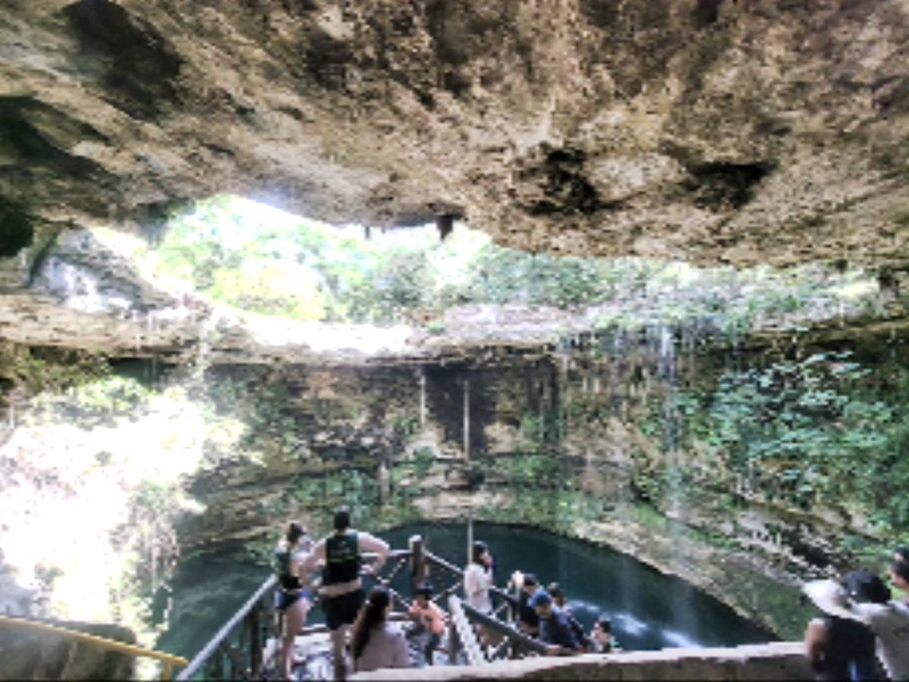
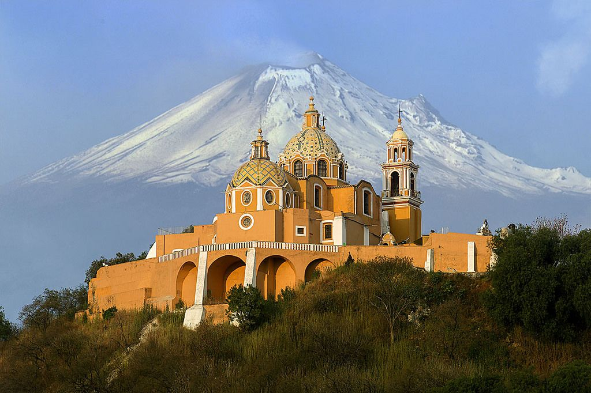
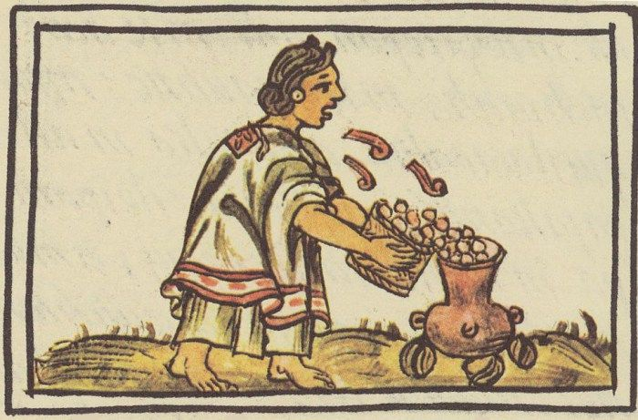

El meteorito de los dinosaurios:
El asteroide que extinguió a los dinosaurios hace 66 millones de años chocó en la península de Yucatán, dejando el famoso cráter de Chicxulub.

La pirámide más grande:
No está en Egipto, sino en Puebla. La Gran Pirámide de Cholula es la base piramidal más grande del mundo y está oculta bajo una montaña con una iglesia encima.

Capital de museos:
La Ciudad de México es una de las ciudades con más museos en todo el mundo, compitiendo directamente con Londres y París.
Origen de delicias mundiales:
El chocolate, el maíz, el jitomate y el aguacate son aportaciones prehispánicas de México para la gastronomía de todo el planeta.

Televisión a color:
Desarrollada por Guillermo González Camarena en 1940, quien patentó el sistema tricromático secuencial de campos.